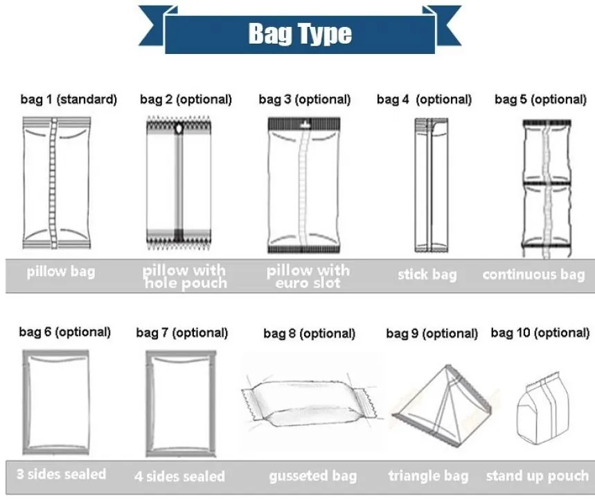
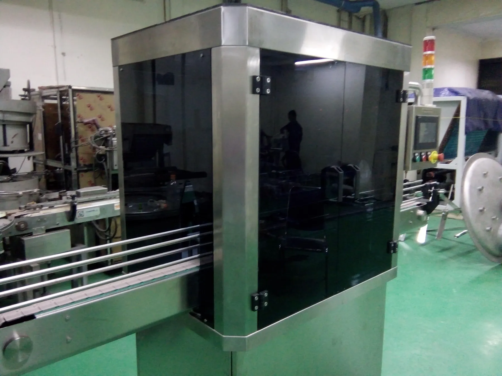

Solusi
Empat cara bekerja dengan kami — satu tim di balik semuanya.
Beli mesin standar yang teruji, pesan mesin khusus untuk satu pekerjaan, atau serahkan satu lini lengkap kepada kami. Fabrikasi dan layanan siap kapan pun Anda butuhkan.
01 · Lini proses turnkey
Satu lini lengkap, dari bahan baku hingga kemasan terisi.
Kami bertanggung jawab atas seluruh proses: merancang alur, memilih dan membuat peralatan, memasang dan menyambungkan perpipaan, serta melakukan commissioning di lokasi Anda. Desain mengacu pada cGMP dan dirancang sebagai sistem closed-loop ketika produk Anda perlu dilindungi.
- Desain prosesKebutuhan, alur, dan layout 3D
- Manufaktur & pengadaanDibuat di Cikarang atau dari mitra
- InstalasiPlatform, perpipaan, dan utilitas
- CommissioningDijalankan dan dibuktikan dengan produk Anda
- 01Dumping station
- 02Vibro screen
- 03Ribbon mixer
- 04Vacuum conveying
- 05Magnet trap
- 06Metal detector
- 07IBC
- 08Auger 3 outlet
- 09Mesin filling


02 · Mesin khusus (SPM)
Ketika tidak ada mesin katalog yang cocok, kami merancang yang sesuai.
Mesin khusus telah menjadi inti kami sejak 2008. Kami memulai dari part, produk, dan cycle time Anda, memodelkan solusi dalam 3D, menyepakati gambar bersama Anda, lalu membuat, menguji, dan memasangnya.
Otomotif & industri
Stasiun inspeksi, jig perakitan, press auto-feeder, quick die change (Dandori), dan material handling tanpa energi.
Farmasi & FMCG
Ampoule feeder, case packer, pembersih botol, hot filling dan pendinginan, IBC blender dengan sistem keselamatan lengkap.
 Mesin khusus
Auto feeder press Dandori multi-alignment
Mempersingkat pergantian die pada lini press yang menangani lima die.
Baca studi kasus
Mesin khusus
Auto feeder press Dandori multi-alignment
Mempersingkat pergantian die pada lini press yang menangani lima die.
Baca studi kasus
 Mesin khusus
Konveyor scrap tanpa listrik
Memindahkan scrap ke kotak scrap secara kontinu — tanpa menambah motor atau konsumsi energi.
Baca studi kasus
Mesin khusus
Konveyor scrap tanpa listrik
Memindahkan scrap ke kotak scrap secara kontinu — tanpa menambah motor atau konsumsi energi.
Baca studi kasus
 Mesin khusus
Case packer dengan top loader otomatis
Mengotomasi pengemasan produk sabun cair ke dalam karton — di dalam ruang yang sudah dimiliki pelanggan.
Baca studi kasus
Mesin khusus
Case packer dengan top loader otomatis
Mengotomasi pengemasan produk sabun cair ke dalam karton — di dalam ruang yang sudah dimiliki pelanggan.
Baca studi kasus
 Mesin khusus
Unit hot filling & pendinginan
Mengisi produk medis dalam kondisi panas, lalu mendinginkannya secara perlahan dan konsisten.
Baca studi kasus
Mesin khusus
Unit hot filling & pendinginan
Mengisi produk medis dalam kondisi panas, lalu mendinginkannya secara perlahan dan konsisten.
Baca studi kasus
 Mesin khusus
Pembersih botol blow & suction
Botol plastik datang dengan debu dan muatan statis yang mengganggu pengisian dan tampilan.
Baca studi kasus
Mesin khusus
Pembersih botol blow & suction
Botol plastik datang dengan debu dan muatan statis yang mengganggu pengisian dan tampilan.
Baca studi kasus
 Jig & stasiun
Jig & stasiun perakitan pneumatik
Menahan dan memposisikan komponen otomotif secara presisi saat perakitan.
Baca studi kasus
Jig & stasiun
Jig & stasiun perakitan pneumatik
Menahan dan memposisikan komponen otomotif secara presisi saat perakitan.
Baca studi kasus
03 · Peralatan proses & pengemasan
Mesin standar teruji, diintegrasikan oleh engineer.
Mitra teknologi kami memproduksi mesin standar dalam jumlah besar; kami memilih model yang tepat untuk produk Anda, menyesuaikannya, mengintegrasikannya dengan lini Anda, dan mendukungnya secara lokal. Pesanan khusus dibuat dan dirakit di Indonesia.
Buka katalog mesin
-
 MixingMixer ribbon, V, W, 3D, dan cone5 mesin
MixingMixer ribbon, V, W, 3D, dan cone5 mesin
-
 Milling & crushingMesin giling pulse, pin, kriogenik, dan ultra-halus6 mesin
Milling & crushingMesin giling pulse, pin, kriogenik, dan ultra-halus6 mesin
-
 Sieving & screeningAyakan getar, ultrasonik, dan sentrifugal6 mesin
Sieving & screeningAyakan getar, ultrasonik, dan sentrifugal6 mesin
-
 Conveying & feedingFeeder vakum, screw, spring, dan vibrasi6 mesin
Conveying & feedingFeeder vakum, screw, spring, dan vibrasi6 mesin
-
 FillingFilling auger, serbuk, cair, kapsul, dan vial20 mesin
FillingFilling auger, serbuk, cair, kapsul, dan vial20 mesin
-
 PengemasanVFFS, sachet, doypack, kantong teh, flow wrap, big bag15 mesin
PengemasanVFFS, sachet, doypack, kantong teh, flow wrap, big bag15 mesin
-
 Sealing, capping & labelingInduction sealing, capper, labeler, pencuci botol15 mesin
Sealing, capping & labelingInduction sealing, capper, labeler, pencuci botol15 mesin
-
 Inspeksi & penimbanganMetal detector, checkweigher, sorter, timbangan8 mesin
Inspeksi & penimbanganMetal detector, checkweigher, sorter, timbangan8 mesin
Mitra teknologi
- Xinxiang Chenwei MachineryMixing, milling, sieving & conveying
- Elin Packaging MachineryPeralatan proses & pengemasan
- Spack MachineForm-fill-seal & filling
- Zegoo Instrument (Shanghai)Metal detector & checkweigher
- Shanghai ShengsenPeralatan pengemasan
- Mitra Cipta TeknikaFabrikasi & instalasi
04 · Fabrikasi & part presisi
Workshop kami sendiri di Jababeka, Cikarang.
Fabrikasi baja stainless dan non-stainless, tangki GMP dan skid proses, jig, rangka, pengaman, dan spare part — dibuat di pabrik kami dan diperiksa sebelum dikirim.
- Tangki stainless, perpipaan, dan platform untuk farmasi dan pangan
- Pengaman dan enclosure mesin
- Part presisi, jig, dan fixture
- Part pengganti saat part asli lama atau tidak tersedia


Belum yakin rute mana yang sesuai?
Ceritakan produk dan hasil yang Anda butuhkan. Kami akan merekomendasikan mesin standar, khusus, atau kombinasinya — beserta alasannya.